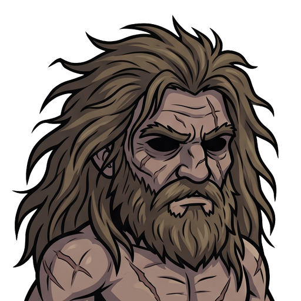

<!doctype html>
<html lang="ko">
<meta charset="utf-8">
<meta name="viewport" content="width=device-width,initial-scale=1">
<title>함성 이펙트 6종 · 새 시안</title>
<style>
*{box-sizing:border-box}body{margin:0;background:#171a20;color:#e3e0d8;font:15px/1.5 system-ui,sans-serif}main{max-width:1280px;margin:auto;padding:30px}h1{margin:0;font-size:25px}p{margin:6px 0 18px;color:#b7b6ba}nav{display:flex;gap:12px;align-items:center;flex-wrap:wrap;margin-bottom:22px}button,select{font:inherit;background:#292d36;border:1px solid #575254;color:inherit;padding:8px 13px;border-radius:5px}button{cursor:pointer}label{display:flex;align-items:center;gap:8px}.grid{display:grid;grid-template-columns:repeat(3,minmax(0,1fr));gap:18px}article{background:#22262e;border:1px solid #41424a;border-radius:8px;padding:16px}h2{font-size:18px;margin:0 0 3px}small{color:#c1b59b}.pair{display:grid;grid-template-columns:1fr 1fr;gap:12px;margin-top:12px}.label{text-align:center;color:#aaaeb7;font-size:12px}.stage{height:154px;position:relative;display:grid;place-items:center;overflow:hidden;border-radius:5px;background:#11141a}.large{width:140px;height:140px;object-fit:contain}.actual{height:143px;margin-top:8px;position:relative;display:grid;place-items:center}.portrait{height:90px;width:90px;object-fit:cover;background:#34302b;border:1px solid #6c6354;border-radius:5px}.overlay{position:absolute;inset:0;margin:auto;object-fit:contain;pointer-events:none}.missing{color:#8e929b;font-size:12px;padding:10px;text-align:center}.playing .overlay{animation:var(--motion) 580ms ease-out infinite;animation-delay:var(--delay)}.no-portrait .portrait{visibility:hidden}.light .stage,.light .actual{background:#ddd7ca}.old{opacity:.86}.meta{font-size:12px;color:#a5a9b1;text-align:center}footer{margin-top:20px;color:#969ba5;font-size:12px}@keyframes wave{0%{transform:scale(.6);opacity:0}25%{opacity:1}70%{transform:scale(1);opacity:1}100%{transform:scale(1.04);opacity:0}}@keyframes inward{0%{transform:scale(1.08);opacity:0}25%{opacity:1}75%{transform:scale(.75);opacity:1}100%{transform:scale(.6);opacity:0}}@keyframes orders{0%{transform:translateY(8px) scale(.82);opacity:0}25%{opacity:1}70%{transform:translateY(-2px) scale(1);opacity:1}100%{transform:translateY(-5px);opacity:0}}@media(max-width:900px){.grid{grid-template-columns:repeat(2,minmax(0,1fr))}}@media(max-width:560px){main{padding:16px}.grid{grid-template-columns:1fr}}
</style>
<main>
<h1>함성 이펙트 · 6종 새 시안</h1>
<p>양옆으로 퍼지는 음파를 공통으로 사용했습니다. 위는 확대, 아래는 90px 초상 위의 기존 표시 크기입니다.</p>
<nav>
<select id="style" aria-label="그림체"><option value="darktoon">다크 카툰</option><option value="foil">금속박</option></select>
<button id="play">움직임 재생</button>
<label><input id="portrait" type="checkbox" checked>초상 표시</label>
<label><input id="light" type="checkbox">밝은 배경</label>
</nav>
<div class="grid" id="grid"></div>
<footer>2026-11-15 · Codex 내장 image_gen 생성 · 검토용 시안 12장 · 원본과 최종 프롬프트: manifest.json</footer>
</main>
<script>
const sprites=[{"id": "war_shout", "name": "워 오더스", "en": "War Orders", "event": "buff", "palette": "bone gold faces, muted old-gold shadows, pale ivory edge accents", "subject": "THREE pairs of stout angular open sound arcs to the LEFT and RIGHT of an empty center. The inner pair shortest, middle pair medium, outer pair longest. Strong squared shoulders and blunt forked ends suggest a firm defensive command. The arcs project OUTWARD, like a voice striking the air, not arrows toward a face.", "style": "darktoon", "source": "war_shout_darktoon.png", "output": "exports/war_shout_darktoon.webp", "game_target": "src/assets/art/fx/skills/war_shout_darktoon.webp"}, {"id": "war_shout", "name": "워 오더스", "en": "War Orders", "event": "buff", "palette": "bone gold faces, muted old-gold shadows, pale ivory edge accents", "subject": "THREE pairs of stout angular open sound arcs to the LEFT and RIGHT of an empty center. The inner pair shortest, middle pair medium, outer pair longest. Strong squared shoulders and blunt forked ends suggest a firm defensive command. The arcs project OUTWARD, like a voice striking the air, not arrows toward a face.", "style": "foil", "source": "war_shout_foil.png", "output": "exports/war_shout_foil.webp", "game_target": "src/assets/art/fx/skills/war_shout_foil.webp"}, {"id": "war_battleorders", "name": "배틀 오더스", "en": "Battle Orders", "event": "buff", "palette": "muted jade-green and oxidized bronze-teal faces, deep forest-teal shadows, pale sage highlights", "subject": "THREE pairs of broad rising open sound arcs to the LEFT and RIGHT of an empty center. The curves are slightly fuller and their top tips lift upward, like a rallying breath swelling the whole formation. The inner pair shortest, middle pair medium, outer pair longest. Keep upper and lower middles OPEN.", "style": "darktoon", "source": "war_battleorders_darktoon.png", "output": "exports/war_battleorders_darktoon.webp", "game_target": "src/assets/art/fx/skills/war_battleorders_darktoon.webp"}, {"id": "war_battleorders", "name": "배틀 오더스", "en": "Battle Orders", "event": "buff", "palette": "muted jade-green and oxidized bronze-teal faces, deep forest-teal shadows, pale sage highlights", "subject": "THREE pairs of broad rising open sound arcs to the LEFT and RIGHT of an empty center. The curves are slightly fuller and their top tips lift upward, like a rallying breath swelling the whole formation. The inner pair shortest, middle pair medium, outer pair longest. Keep upper and lower middles OPEN.", "style": "foil", "source": "war_battleorders_foil.png", "output": "exports/war_battleorders_foil.webp", "game_target": "src/assets/art/fx/skills/war_battleorders_foil.webp"}, {"id": "war_warcry", "name": "워 크라이", "en": "War Cry", "event": "bad", "palette": "deep blood-crimson faces, dark burgundy shadows, muted coral-red edge highlights", "subject": "THREE pairs of short powerful jagged open sound arcs to the LEFT and RIGHT of an empty center. Each arc is a broad heavy bent wedge with ONE fractured outer edge. The inner pair shortest, middle pair medium, outer pair longest. Hostile pressure conveyed by compressed angular curves; no closed ring and no tiny shards.", "style": "darktoon", "source": "war_warcry_darktoon.png", "output": "exports/war_warcry_darktoon.webp", "game_target": "src/assets/art/fx/skills/war_warcry_darktoon.webp"}, {"id": "war_warcry", "name": "워 크라이", "en": "War Cry", "event": "bad", "palette": "deep blood-crimson faces, dark burgundy shadows, muted coral-red edge highlights", "subject": "THREE pairs of short powerful jagged open sound arcs to the LEFT and RIGHT of an empty center. Each arc is a broad heavy bent wedge with ONE fractured outer edge. The inner pair shortest, middle pair medium, outer pair longest. Hostile pressure conveyed by compressed angular curves; no closed ring and no tiny shards.", "style": "foil", "source": "war_warcry_foil.png", "output": "exports/war_warcry_foil.webp", "game_target": "src/assets/art/fx/skills/war_warcry_foil.webp"}, {"id": "war_battlecry", "name": "배틀 크라이", "en": "Battle Cry", "event": "bad", "palette": "dusty ochre-gold faces with iron-gray outer facets, dark umber shadows and pale sand highlights", "subject": "THREE pairs of broad broken angular open sound arcs to the LEFT and RIGHT of an empty center. Each arc has ONE clean transparent diagonal split through its width, as if the forceful voice cracks the air like armor. The inner pair shortest, middle pair medium, outer pair longest. The split separates large sound-wave segments only: do NOT add literal armor plates or stones.", "style": "darktoon", "source": "war_battlecry_darktoon.png", "output": "exports/war_battlecry_darktoon.webp", "game_target": "src/assets/art/fx/skills/war_battlecry_darktoon.webp"}, {"id": "war_battlecry", "name": "배틀 크라이", "en": "Battle Cry", "event": "bad", "palette": "dusty ochre-gold faces with iron-gray outer facets, dark umber shadows and pale sand highlights", "subject": "THREE pairs of broad broken angular open sound arcs to the LEFT and RIGHT of an empty center. Each arc has ONE clean transparent diagonal split through its width, as if the forceful voice cracks the air like armor. The inner pair shortest, middle pair medium, outer pair longest. The split separates large sound-wave segments only: do NOT add literal armor plates or stones.", "style": "foil", "source": "war_battlecry_foil.png", "output": "exports/war_battlecry_foil.webp", "game_target": "src/assets/art/fx/skills/war_battlecry_foil.webp"}, {"id": "war_command", "name": "호령", "en": "Command", "event": "buff", "palette": "rich old-gold faces, muted amber shadows, warm bone-ivory highlights, very small ember-orange tips", "subject": "THREE pairs of tall forceful open sound arcs to the LEFT and RIGHT of an empty center. Their upper ends sweep up into a single broad raised point, creating an uplifted commanding silhouette while staying clearly SOUND WAVES, not stacked arrows or chevrons. Inner pair shortest, middle pair medium, outer pair longest. This advanced shout has heavier strokes and a stronger upward flare.", "style": "darktoon", "source": "war_command_darktoon.png", "output": "exports/war_command_darktoon.webp", "game_target": "src/assets/art/fx/skills/war_command_darktoon.webp"}, {"id": "war_command", "name": "호령", "en": "Command", "event": "buff", "palette": "rich old-gold faces, muted amber shadows, warm bone-ivory highlights, very small ember-orange tips", "subject": "THREE pairs of tall forceful open sound arcs to the LEFT and RIGHT of an empty center. Their upper ends sweep up into a single broad raised point, creating an uplifted commanding silhouette while staying clearly SOUND WAVES, not stacked arrows or chevrons. Inner pair shortest, middle pair medium, outer pair longest. This advanced shout has heavier strokes and a stronger upward flare.", "style": "foil", "source": "war_command_foil.png", "output": "exports/war_command_foil.webp", "game_target": "src/assets/art/fx/skills/war_command_foil.webp"}, {"id": "war_intimidate", "name": "사자후", "en": "Lion's Roar", "event": "bad", "palette": "deep crimson and ember-red faces, charcoal-burgundy shadows, bone-white narrow highlight facets", "subject": "THREE pairs of huge serrated open sound arcs to the LEFT and RIGHT of an empty center. Each arc has TWO broad mane-like spikes along its OUTER edge to suggest a lion's ferocious roaring voice without drawing a lion. Inner pair shortest, middle pair medium, outer pair longest. Strongest and widest shout in the family, with sharp broad ends; no literal animal, teeth, face, eyes or head.", "style": "darktoon", "source": "war_intimidate_darktoon.png", "output": "exports/war_intimidate_darktoon.webp", "game_target": "src/assets/art/fx/skills/war_intimidate_darktoon.webp"}, {"id": "war_intimidate", "name": "사자후", "en": "Lion's Roar", "event": "bad", "palette": "deep crimson and ember-red faces, charcoal-burgundy shadows, bone-white narrow highlight facets", "subject": "THREE pairs of huge serrated open sound arcs to the LEFT and RIGHT of an empty center. Each arc has TWO broad mane-like spikes along its OUTER edge to suggest a lion's ferocious roaring voice without drawing a lion. Inner pair shortest, middle pair medium, outer pair longest. Strongest and widest shout in the family, with sharp broad ends; no literal animal, teeth, face, eyes or head.", "style": "foil", "source": "war_intimidate_foil.png", "output": "exports/war_intimidate_foil.webp", "game_target": "src/assets/art/fx/skills/war_intimidate_foil.webp"}];
const motion={war_shout:'wave',war_battleorders:'wave',war_warcry:'inward',war_battlecry:'inward',war_command:'orders',war_intimidate:'inward'};
const size={war_command:132,war_intimidate:128};
const grid=document.getElementById('grid');
function render(){
 const style=document.getElementById('style').value;
 grid.innerHTML=sprites.filter(s=>s.style===style).map((s,i)=>{
  const old='../../fx/skills/'+s.id+'_'+style+'.webp';
  const missing=style==='foil'&&['war_warcry','war_battlecry'].includes(s.id);
  const cell=(src,before)=>`<div><div class="label">${before?'기존':'새 시안'}</div><div class="stage">${before&&missing?'<span class="missing">기존에는 코드 이펙트 사용</span>':``}</div><div class="actual">${before&&missing?'':``}</div><div class="meta">${size[s.id]||90}px</div></div>`;
  return `<article data-skill="${s.id}"><h2>${s.name}</h2><small>${s.en}</small><div class="pair">${cell(old,true)}${cell(s.output,false)}</div></article>`;
 }).join('');
}
document.getElementById('style').onchange=render;
document.getElementById('play').onclick=e=>{const playing=document.body.classList.toggle('playing');e.target.textContent=playing?'정지':'움직임 재생'};
document.getElementById('portrait').onchange=e=>document.body.classList.toggle('no-portrait',!e.target.checked);
document.getElementById('light').onchange=e=>document.body.classList.toggle('light',e.target.checked);
render();
</script>
</html>
